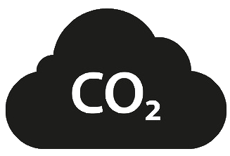

This interactive, scrollable data visualization will take you on a journey through the environmental impacts of food production to help you understand the footprint of your own diet. Scroll down to read more about GHG emissions, water use, and land use from different foods and explore visuals that bring these topics to life.
Note: If the visualization doesn't fit your screen, try zooming out with Ctrl + - / Cmd + -.
Data Source: Reducing food’s environmental impacts through producers and consumers
Inspiration:Our World in Data
We often think about our transportation, electricity, and energy use as the main contributors to global greenhouse gas (GHG) emissions, which are major contributors to global warming and climate change. However, food production and consumption make up nearly a third of global emissions and also contribute significantly to land and water use. Explore the treemap on the right to understand the breakdown of GHG emissions across categories. Click a box to zoom in and click the top bar to zoom out one level. To learn more about GHG emissions, click the icon below.
In addition to GHG emissions, everything you eat also consumes water. This is a factor we often don’t consider when trying to understand environmental impact, but the reality is that freshwater is one of our scarcest resources. Let’s take a closer look the freshwater withdrawal needed to produce 1000 calories of a food product. Search for food products in the menu below to highlight it on the graph to the right.
The bar chart y-axis is ranked by the relative amounts of water use by product (e.g., Prawn is ranked #1 because it uses the most water per 1000 kcal). For context, the label on the graph also gives you an idea of how many bathtubs of water are used per meal of the selected food product. As you can see by exploring the visual, farmed prawn and fish are the top consumers of water out of the 35 food products represented. To learn more about water use in agriculture, click the waterdrop icon below.
Similar to water use, land use is another often overlooked factor that causes significant environmental degradation. Select some products of interest below by clicking the buttons.
The graph on the right will automatically scale to display the land use distribution of farms in the dataset per kg of product. The circles represent the median land use. Some products have portions of the distribution with negative land use: this is because the processes used by these farms offset land use through reuse, crop rotation, or other methods, causing a net negative amount of land use. As you can see, beef has the largest land use distribution and highest median land use by far. We’ve included more information for each product to help you understand their impact in more detail. To learn more about land use in agriculture, click the icon at the bottom of the page.